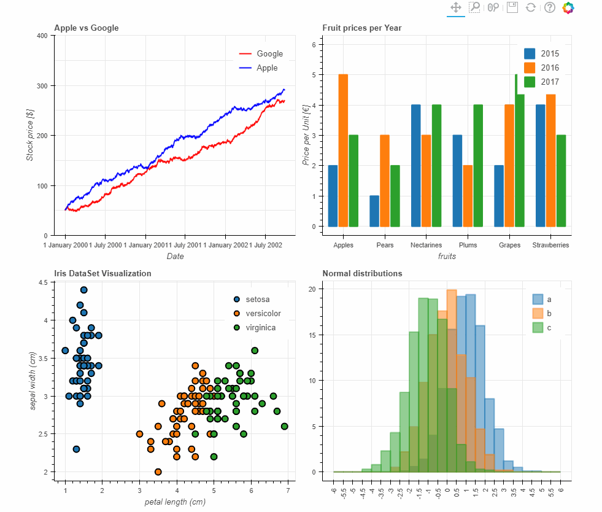

About Me
I'm Jamuna Prasad Yadav, a data scientist with a diverse skill set,
passionate about transforming raw data into actionable insights.
I hold an M.Sc. in Data Science from Chandigarh University and possess a range of skills from creativity,
decision-making, and problem-solving to technical expertise in Python, SQL, MongoDB, PowerBI, and more.
With verified artist credentials, I've interned at 1stop.ai, where I applied my data-driven analysis skills.
Notable projects include hierarchical clustering analysis for customer segmentation,
advanced data analysis in MS Excel, and online store sales analysis using SQL.
I've also actively contributed to Kaggle, achieving recognition in competitions and collaborating on data science projects.
Connect with me on linkedin and explore my work on github.
Let's collaborate and unlock the potential of data for informed decision-making.
Feel free to reach out at jamunaprasadyaadavrnq@gmail.com.
Internships
1stop.ai
Intern
Remote Aug 2022- Dec 2022
Project Title:
During my internship, I embarked on a fascinating journey of conducting a Hierarchical Clustering Analysis for Customer Segmentation, a project that allowed me to delve deep into the world of data science. Armed with Python and the powerful scikit-learn library, I ventured into the realm of customer data, where I meticulously preprocessed and analyzed the vast troves of information at hand. My primary objective was to unveil the hidden insights within this sea of data, ultimately resulting in the identification of five distinct customer segments, each possessing unique and intriguing purchasing patterns.
This project was not merely an exercise in data manipulation and analysis but a remarkable opportunity to harness the true potential of data-driven decision-making. As I navigated the intricacies of hierarchical clustering, I unearthed the inherent structure within the customer data, shedding light on previously undiscovered relationships and behaviors. This exploration enabled businesses to tailor their strategies to cater to each customer segment's specific needs and preferences, thereby enhancing their overall performance and competitiveness.
Portfolio
Data Analysis and Visualization in MS Excel:
In this project, I led a data analysis effort using advanced Microsoft Excel tools to gather,
clean, and visualize data.
My goal was to enhance decision-making through accurate and consistent data processing.
I collaborated with cross-functional teams, optimized workflows through automation,
and significantly reduced processing time.
This project showcased my proficiency in data manipulation and visualization using MS Excel,
making it a valuable addition to my data-centric skillset.
Online Store Sales Analysis Using SQL:
In this comprehensive project, I conducted an in-depth analysis of online store sales data using SQL.
My skills in database design and SQL querying were put to use to provide insights into product popularity and revenue trends.
Through this project, I demonstrated strong data manipulation skills and showcased my ability to extract valuable information from complex datasets.
This experience is a testament to my capabilities for data analysis and problem-solving in real-world scenarios.

Data Analysis with Pandas
Prociently completed adata analysis project with Pandas,showcasing strong data manipulationand Python programming skills.Proven ability to extract insights fromcomplex datasets, making it a valuable
addition to my entry-level job resume.
